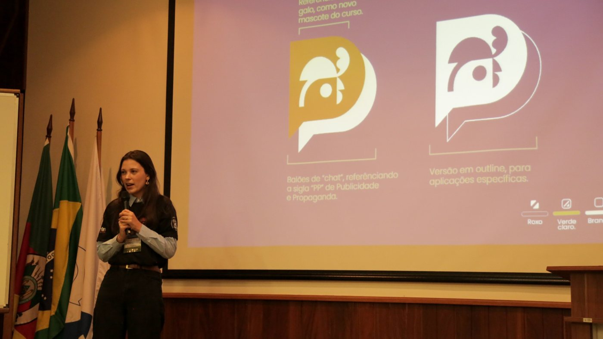
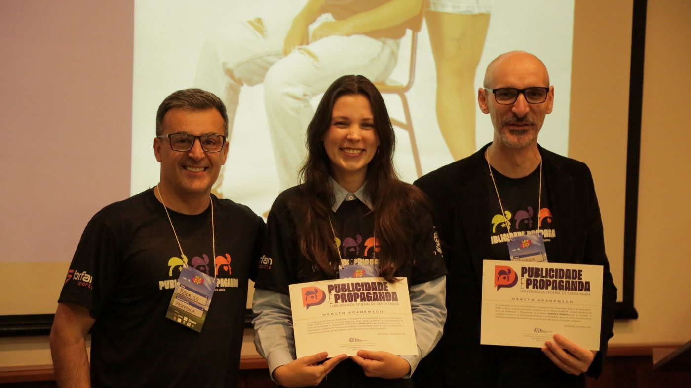
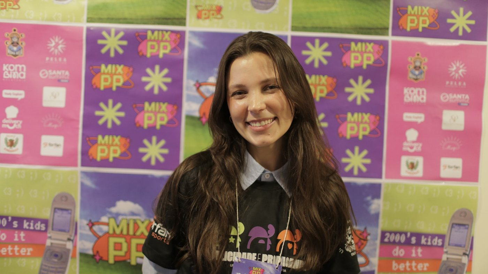
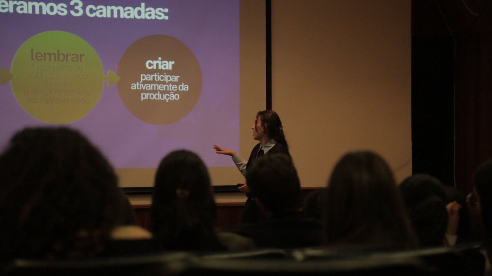
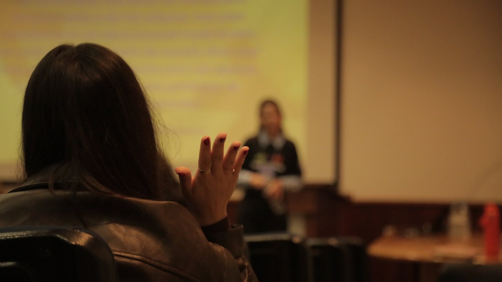
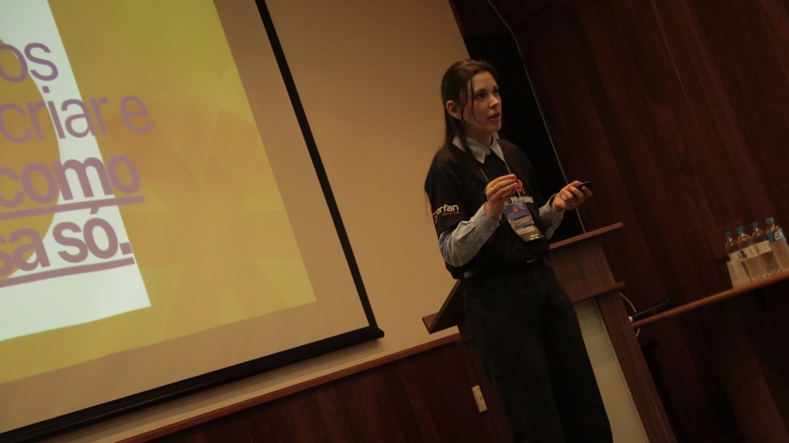
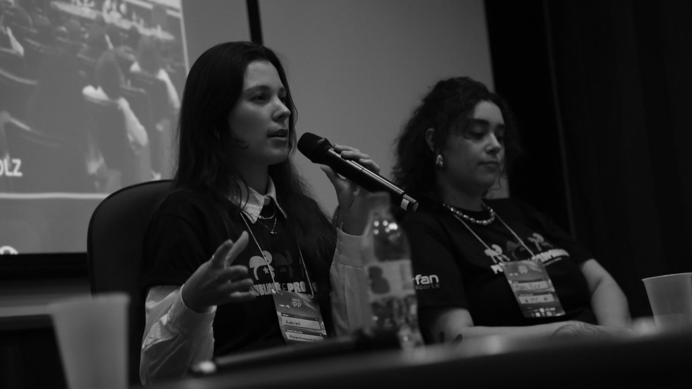

01undergraduate thesis · 2024
Color first.
I rebuilt the brand of the Publicity and Advertising course at UFSM. Color accessibility was the founding criterion: every later decision had to pass it.
“Analysis, (Re)Branding, and (Re)Positioning of the Publicity and Advertising Course Brand at UFSM Following the Basic Parameters of Color Blindness Accessibility”
Diagnosis
Study the brand as it was, and the people who read it.
Before drawing anything, I looked at the course brand as it was and asked the people who read it. The first stage was an online form, open from June to September 2024 and answered by 47 people linked to the course. The second stage put six mark options to 20 students in a single day, and they scored each one.
Respondents described the old mark as soft, welcoming, discreet and traditional. 83.3% said its colors were not accessible, and 96.7% did not believe its applications followed basic accessibility parameters.
Measure before designing. The survey would set the brief.
Stage 1: n=47. An online form (Google Forms), June to September 2024, answered by people linked to the course, some reached in person. Every respondent reported no disability, so the accessibility checks rest on simulators and WCAG ratios, not on testing with people who have color vision deficiency.
Stage 2: n=20. Students voted on six mark options in a single day.
Values and brand disagreed. Respondents linked the course to creativity and dynamism, and the mark to tradition, and 73.3% did not feel represented by it. The brief became a bolder palette, built to pass accessibility checks.
- Do not believe its applications follow basic accessibility parameters96.7%
- Say it meets none of the basic accessibility parameters86.7%
- Say its colors are not accessible83.3%
- Say it is not accessible in any way76.7%
- Do not feel represented by the mark73.3%
Stage 1, n=47, online, June to September 2024. Respondents with no disability.
Palette first
Color before logo, type or layout.
I defined the palette before any other element of the brand. The logo, the typography and the layouts came later and had to work with it.
When color carries a message on its own, some readers lose it.
Make color the first criterion. Pair each color with a ColorADD symbol, so meaning never depends on hue alone.
Contrast pairs checked against WCAG. Purple with green reaches AAA, purple with yellow reaches AA, and purple with orange reaches AA for large text only. Each color simulated in eight types of color vision deficiency.
Six colors. Purple is the anchor and guides every application, combined with green, yellow and orange. Off-white and charcoal are the neutrals. For readers with color vision deficiency, purple does not match any other color in the palette.
The palette
Piece vs. simulations
Every key piece, side by side with eight simulations.
I placed each key piece next to its simulations. This made it possible to check, piece by piece, whether information survived in each type of color vision deficiency.
How to read this grid. Each square is one simulation of the palette. Inside it, each band is one palette color, shown with its ColorADD symbol, its name and the HEX value that color takes in that simulation. Original is the palette as typical color vision sees it.
ColorADD. A universal color identification system that pairs each color with a simple symbol, so a color can be identified without relying on hue. The six symbols above are the ones used for the palette, in this order: purple, green, orange, yellow, off-white and charcoal.
Method. The simulated HEX values were read from the thesis figure that applies the eight types of color vision deficiency to the palette. Simulations are approximations: they help check the work and do not replace testing with people who have color vision deficiency.
The simulations showed that green and yellow could be confused, mostly in protanomaly, protanopia and deuteranopia.
The manual's applications do not combine green with yellow. The applications are final and are not edited for each use.
Simulations are approximations. I use them to check my work. They do not replace the reading of individuals with color vision deficiency.
System and manual
The rules that keep the brand accessible after launch.
The rebrand became a full brand manual, 67 pages in seven parts: the brand, communication guidelines, visual identity, application guide, incorrect uses, brand assets and contact. It sets the rules for the logo, the palette and the typefaces, and it defines the voice: creativity, authenticity, dynamism and inclusion, a formal institutional tone and a relaxed internal one. The typefaces are Beni in black for the name and Poppins for text. Each page carries a ColorADD legend in its bottom right corner, so every color is also named by a symbol.
People at the center
The people the work is for, in the room where it is judged.
On my own initiative, I invited Thiovane Pereira to sit on my examination board. He has color vision deficiency. He is a publicity and advertising graduate from UFSM, works as an art director, and researches color accessibility. He also consults on making projects accessible to people with color blindness.
Thiovane is the creator of the Guia de Acessibilidade Cromática para Daltonismo ↗. The guide grew out of his undergraduate thesis at UFSM. It sets out four principles of chromatic accessibility for creative professionals, and it has two accessible versions: light mode and night mode. Two new versions are coming, with screen magnification and an audiobook.
Launch
Mix PP, 2026.
The launch was planned for the first half of 2025. It happened later, in 2026, at Mix PP, during my main talk.
“Creative (Re)Vision: Accessibility as Method in Inclusive Brand Design”
Main talk, Mix PP 2026







What comes next
From the screen to real situations.
I checked this palette with simulators, on a screen. People meet posters, signs and screens at a distance, for a few seconds, among other stimuli. I want to study what happens to color-coded messages in those conditions.
Sensa!